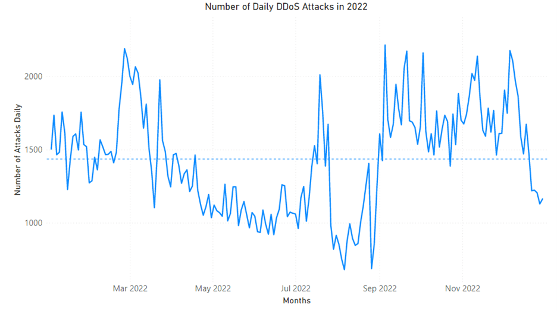
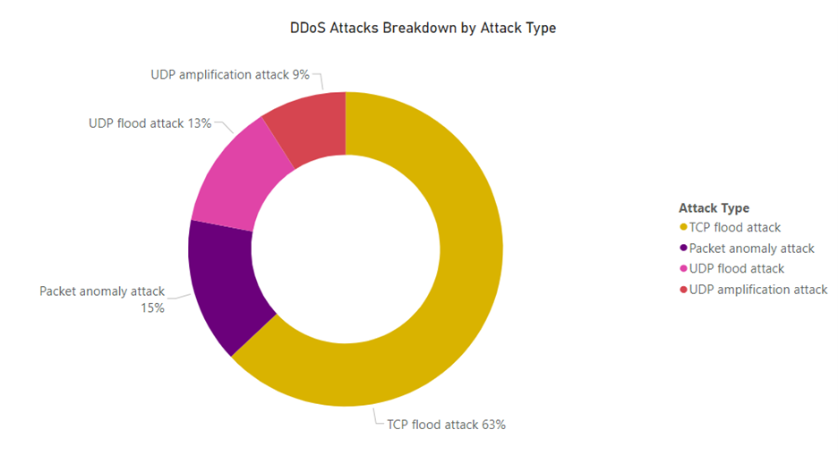

As organizations strengthen their defenses and take a more proactive approach to protection, attackers are adapting their techniques and increasing the sophistication of their operations. Cybercrime continues to rise with the industrialization of the cybercrime economy providing cybercriminals with greater access to tools and infrastructure. In the first half of 2022, the cyberthreat landscape was focused around the war in Ukraine and the rise of nation state attacks and hacktivism across the world. In February, Ukraine was hit with the largest distributed denial of service (DDoS) attack ever in the country’s history, impacting government websites and banking web services. As the conflict continued, there was a ripple effect to western countries, including the UK, US, and Germany. UK financial services firms experienced a significant increase in DDoS attacks as they were heavily targeted by nation state attackers and hacktivists looking to disrupt Ukraine’s allies. Hacktivism continued to be rampant throughout the year, including Taiwanese websites experiencing outages in August 2022 due to DDoS attacks ahead of House Speaker Nancy Pelosi’s arrival in Taiwan. Beyond attacks with political motives, DDoS attacks also impacted a wide range of industries. In particular, the gaming industry continued to be highly targeted. In March 2022, a DDoS attack brought down the game servers of Among Us, preventing players from accessing the popular multiplayer game for a few days. A new version of RapperBot (heavily inspired by the Mirai botnet) was used in the second half of 2022 to target game servers running Grand Theft Auto: San Andreas. In this blog, we share trends and insights into DDoS attacks we observed and mitigated throughout 2022.
In 2022, Microsoft mitigated an average of 1,435 attacks per day. The maximum number of attacks in a day recorded was 2,215 attacks on September 22, 2022. The minimum number of attacks in a day was 680 on August 22, 2022. In total, we mitigated upwards of 520,000 unique attacks against our global infrastructure during 2022.
This year, we saw a lower volume of attacks in June through August and a high volume of attacks during the holiday season until the last week of December. This is in line with attacks trends we have seen in the last few years, except for 2021 where there were fewer attacks during the holiday season. In May, we mitigated a 3.25 terabits per second (TBps) attack in Azure, the largest attack in 2022. DDoS protection tip: Make sure to avoid having a single virtual machine backend so it is less likely to get overwhelmed. Azure DDoS Protection covers scaled out costs incurred for all resources during an attack, so configure autoscaling to absorb the initial burst of attack traffic while mitigation kicks in.
TCP attacks were the most frequent form of DDoS attack encountered in 2022, comprising 63% of all attack traffic, which includes all TCP attack vectors: TCP SYN, TCP ACK, TCP floods, etc. Since TCP remains the most common networking protocol, we expect TCP-based attacks to continue to make up most DDoS attacks. UDP attacks were significant as well with 22% of all attacks (combined for UDP flood and UDP amplification attacks), while Packet anomaly attacks made up 15% of attacks.
Out of UDP flood attacks, spoofed floods consumed most of the attack volume with 53%. The remaining attack vectors were reflected amplification attacks, with the main types being CLDAP, NTP, and DNS. We observed TCP reflected amplification attacks becoming more prevalent, with attacks on Azure resources using diverse types of reflectors and attack vectors. This new attack vector is taking advantage of improper TCP stack implementation in middleboxes, such as firewalls and deep packet inspection devices, to elicit amplified responses that can reach infinite amplification in some cases. As an example, in April 2022, we monitored a reflected amplified SYN+ACK attack on an Azure resource in Asia. The attack reached 30 million packets per second (pps) and lasted 15 seconds. Attack throughput was not very high, however there were 900 reflectors involved, each with retransmissions, resulting in high pps rate that can bring down the host and other network infrastructure. DDoS protection tip: To protect against UDP and TCP attacks, we recommend using Azure DDoS Protection. For gaming customers, consider using A10 virtual appliances and Azure Gateway Load Balancers to help with volume-based attacks.
Shorter duration attacks were more commonly observed this past year, with 89% of attacks lasting less than one hour. Attacks spanning one to two minutes made up 26% of the attacks seen this year. This is not a new trend as attacks that are shorter require less resources and are more challenging to mitigate for legacy DDoS defenses. Attackers often use multiple short attacks over the span of multiple hours to make the most impact while using the fewest number of resources. Short attacks take advantage of the time it takes systems to detect the attack and for mitigation to kick in. While time to mitigation may only take one or two minutes, the information from those short attacks can make it into the backend of services, impacting legitimate usage. If a short attack can cause a reboot of the systems, this can then trigger multiple internal attacks as every legitimate user tries to reconnect at the same time. DDoS protection tip: Use Azure Web Application Firewall to protect web applications.